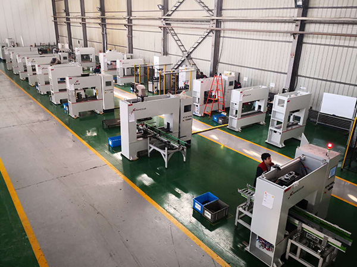

发布时间：2018-11-03 点击量：896
【一、管材校直机应用中的问题及齿轮硬度要求】
校直机中的管道校直机是一种常见的校直机。 因此，这种校直机的研究将在下面继续，因为这也是它的基本要求。 因此，充分理解这一目的是必要和不可避免的。
1、管道拉直器可以用来拉直无缝钢管吗？
在这种情况下，校直机制造厂家完全有可能。此外，它的操作也非常简单。只需将无缝钢管放入校直机中，进行正确规范的操作，就能获得良好的校直效果。
2、管道校直机的部件等是否应首先检查其操作和使用情况？
在校直机的运行和使用中，需要对校直机的一些重要关键部件进行预先检查，这也是必要的。它的主要部件是传动机构、工作装置和设备的间隙，它们非常重要，不可省略。
3、管道拉直器可以用来拉直焊接管道吗？钢管校直机的齿轮应该达到什么硬度
焊管可以用管子校直机校直，这是没有问题的。管材校直机齿轮的材质一般为35CrMo，硬度为255-286、厚膛壁身管。如果不能满足硬度要求，就不能使用。
以上都可以说是管道校直机的基础知识，也是必不可少的。否则，就不可能完全理解和理解本网站的产品，从而无法达到预期的目标和要求。此外，它不利于产品的学习过程，因此不能粗心大意地对待它。
【二、如何校直钢管校直机及一些操作补充】
我相信大家都很熟悉校直机中的钢管校直机，但是到目前为止，他们的学习水平还存在很多不足和不足。因此，下面将通过一些具体问题引出文章的内容，并扩展相关知识的解释，以补充、提高我们对这一产品的认识。
1、在校直机中，板材校直机和管材校直机在校直原理上是否相同？此外，在管道校直机的操作中应该增加什么
校直机中的板材校直机和管材校直机在校直原理上是相同的，没有区别，因为它们都属于校直机的范畴。
关于管道校直机的校直操作，需要补充的内容如下：
(1)在这种校直机设备上，不能放置任何物品和工具等。，以免掉入机器设备中，从而损坏设备。
(2)管道校直机中的料架和料槽应安装平直。此外，在校直机的中心线上，也需要对准。
(3)应严格控制管道校直机的校直速度，并根据材料特性等确定合适的校直速度。此外，对其操作人员来说，在工作时，他们不能采取一些危险的行动来避免危险或事故。
2、管道校直机如何完成校直？
简而言之，管道校直机的校直是在管道进入校直机时旋转前进，通过反复变形达到校直的目的。
从上面的描述中，我们可以知道管道校直机的上下机架通常是焊接部件，以便于观察和调整。校直辊位于辊座上，然后用螺钉固定。因此，可以通过改变校直管的直径来改变辊子角度，从而达到校直要求。